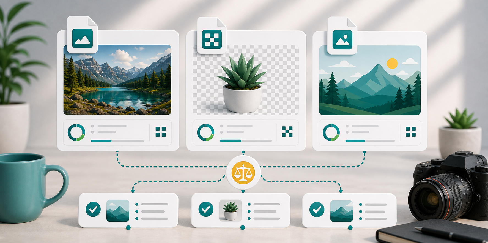

Formats
JPG vs PNG vs WebP: which image format should you use?

Choosing between JPG, PNG, and WebP is one of the most common image optimization questions. The short answer is simple: use JPG for most photos, PNG when you need transparency or crisp graphics, and WebP for modern websites when smaller files matter. The longer answer depends on where the image will be used.
JPG is the everyday photo format. It is widely supported, easy to upload, and usually creates much smaller files than PNG for camera images. The tradeoff is that JPG uses lossy compression. It removes some information to reduce size. At sensible quality settings, that loss is hard to notice. At very low quality, you may see blocky areas, color bands, or fuzzy edges.
PNG is best when you need transparency, sharp edges, diagrams, UI screenshots, or simple graphics. It is lossless, which means it can preserve details very cleanly. The downside is file size. A photograph saved as PNG can be much larger than the same image saved as JPG or WebP. For website photos, PNG is often the wrong choice unless transparency is required.
WebP is built for the web. It can handle lossy and lossless compression and can support transparency. In many cases, WebP gives smaller files than JPG or PNG at similar visible quality. That makes it useful for websites, blogs, landing pages, product images, and thumbnails. The main caution is compatibility with older tools or upload forms. Some portals still ask for JPG or PNG only.
For SEO and page speed, format choice matters because file size affects loading. Google Search supports common image formats including JPEG, PNG, WebP, SVG, and AVIF. web.dev also notes that modern formats like WebP and AVIF may provide better compression than PNG or JPEG. That does not mean you should blindly convert everything. Test the result and use the format that works for the image and platform.
Use the JPG compressor for photos, the PNG compressor for screenshots or graphics, and the main compressor when you want to compare formats. For a deeper PNG decision, read compress PNG or convert to WebP.
For social media and messaging, compatibility matters. JPG is usually the safest option for photos because almost every platform accepts it. PNG is useful for graphics, but it may create larger files. WebP is excellent for websites, but some upload forms and older tools may reject it. Always check the destination before choosing the final format.
For editing, keep a high-quality source file. Do not make repeated changes to a heavily compressed JPG. Each save can add more damage. If you are designing a banner, product image, or social graphic, keep the original design file or PNG export, then create compressed delivery versions for each platform.
For websites, WebP is often the best first test, especially for photos and graphics that do not need legacy compatibility. Still, a format switch should be checked visually. Some images do not shrink much, and some transparent graphics may need careful quality settings. Good optimization is measured by both file size and appearance.
If you are building a simple publishing workflow, keep the choice practical. Use JPG for camera photos that need broad compatibility, PNG for transparency and crisp graphics, and WebP for web delivery when your platform supports it. That simple rule covers most everyday image decisions without overcomplicating the process.
Sources and further reading
- Google Image SEO best practices lists image formats supported by Google Search.
- web.dev guide to choosing image formats explains when modern and legacy formats make sense.